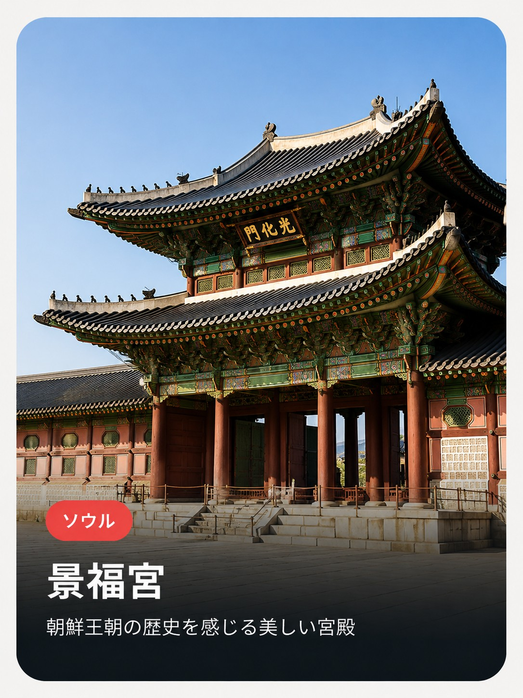

- 住所
- ソウル特別市 鍾路区 社稷路161
- 訪問時間・所要
- 開門直後の午前中が比較的空いている。所要1.5〜2時間（守門将交代式は日中数回実施）
- 目安予算
- 大人（19〜64歳）3,000ウォン。満24歳以下・65歳以上は無料
- アクセス
- 地下鉄3号線 景福宮駅5番出口から徒歩2〜3分
💡 月曜が定休日（休宮日）なので要注意。韓服をレンタルして着ていくと入場無料になる制度がある。
朝鮮王朝の歴史を感じる美しい宮殿

💡 月曜が定休日（休宮日）なので要注意。韓服をレンタルして着ていくと入場無料になる制度がある。